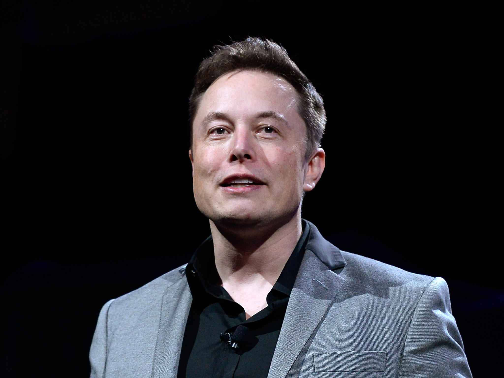
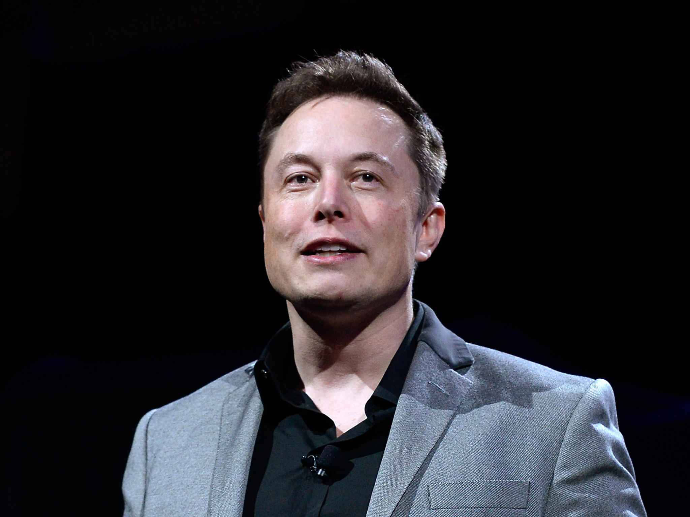

Elon Musk
The Richest Person In The World
 

Musk at the Royal Society admissions day in London, July 2018
Elon Reeve Musk FRS ( born June 28, 1971) is a business
magnate, industrial designer and engineer.[3] He is the founder, CEO,
CTO and chief designer of SpaceX; early investor,[b] CEO and product
architect of Tesla, Inc.; founder of The Boring Company; co-founder
of Neuralink; and co-founder and initial co-chairman of OpenAI.
A centibillionaire,[6] Musk became the richest person in the world in
January 2021, with an estimated net worth of $185 billion at the time,
surpassing Jeff Bezos.
Musk was born to a Canadian mother and South African father and
raised in Pretoria, South Africa. He briefly attended the University
of Pretoria before moving to Canada aged 17 to attend Queen's
University. He transferred to the University of Pennsylvania
two years later, where he received dual bachelor's degrees in
economics and physics. He moved to California in 1995 to attend
Stanford University but decided instead to pursue a business career
-founding web software company Zip2 with his brother Kimbal. The
start-up was acquired by Compaq for $307 million in 1999. Musk
co-founded online bank X.com that same year, which merged with
Confinity in 2000 to form the company PayPal and was subsequently
bought by eBay in 2002 for $1.5 billion.
Telsa Motors
Tesla designs and manufactures premium electric vehicles. Tesla currently produces the Model S sedan and the Model X SUV crossover. Musk assumed leadership of the comany as CEO and prouct architect following the financial crisis in 2008
SpaceX
SpaceX designs, manufactures and launches advanced rockets and spacecraft. The company was founded in 2002 to revolutionize space technology with the Falcon 9, Falcon Heavy, and Dragon lauch vehicles. An essential goal aceX is to make space travel more affordable.
PayPal
PayPal, co-founded by Elon Musk, revolutionized e-commerce during the internet's infancy, allowing innovative banking and futuristic online checking accounts. PayPal was bought acquired by eBay in 2002 for $1.5 billion.